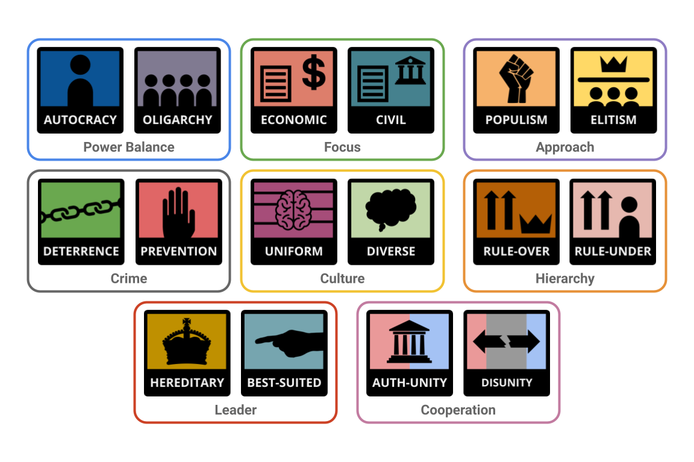

This website links to all my tests, in order to make it easier to access my tests. It also helps me reduce the number of accounts needed if I were to create more tests in the future.
RightValues
RightValues is a quiz for the people on the right of the spectrum, based upon and serves as the alternative to the LeftValues quiz. If you are not a rightist, this quiz is obviously not suited for you, and you should look for the LeftValues instead.
10Groups
10Groups is a political compass test that examines one's political beliefs on a variety of compasses, each representing a group of views. The test is based on different parts from SapplyValues and 8values.
8Dreams
8Dreams, based on 8values, is a political quiz that attempts to assign percentages for eight different off-compass political values. There are four independent axes - Propietary, Mastery, Individuality, and Prioritative - and each has two opposing values assigned to them.
InfValues
InfValues (short for Infinite Values), is based on SapplyValues, which is in turn based on 8values. It contains 45 Axes.

AuthValues
AuthValues is a political test made for people who support an Authoritarian government. It seeks to identify the positions and values of Authoritarians. If you are a Libertarian, this quiz is obviously not made for you, but you can try taking it anyways.
12Axes
12axes, based off of 9axes, is a political quiz that tries to improve the 9axes test by reorganizing, improving, and patching errors within the test. It assigns your political beliefs in 12 different axes that are grouped in 4 different categories.
SoilTextureCompass
SoilTextureTest is, in essence, a quiz that attempts to assign the type of material without you actually tasting it or evaluating it. It's a parody test, made for r/SoilTextureCompass.
6Foundations
6Foundations is a political and moral test based on the Moral Foundations Theory. This test aims to predict a person's political beliefs from their moral values, based on how important an issue is to a person, or how much a person agrees with a statement.
There are currently 7 tests.
Other Tests
Here are some other tests that are unique and good in their own ways. These tests are not made by me.